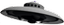
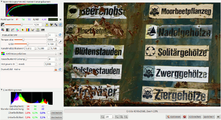

UFRaw
Dieser Artikel wurde für die folgenden Ubuntu-Versionen getestet:
Ubuntu 16.04 Xenial Xerus
Ubuntu 14.04 Trusty Tahr
Zum Verständnis dieses Artikels sind folgende Seiten hilfreich:

UFRaw  ist ein Programm zum Auslesen, Bearbeiten und Umwandeln von Bildern im Rohdatenformat (RAW). Es kann entweder als selbständiges Programm oder als Erweiterung für GIMP verwendet werden. Eine Liste der unterstützten Kameramodelle findet sich auf der Homepage des zugrunde liegenden Programms dcraw .
ist ein Programm zum Auslesen, Bearbeiten und Umwandeln von Bildern im Rohdatenformat (RAW). Es kann entweder als selbständiges Programm oder als Erweiterung für GIMP verwendet werden. Eine Liste der unterstützten Kameramodelle findet sich auf der Homepage des zugrunde liegenden Programms dcraw .
|  |
| UFRaw - Hauptfenster |
Installation¶
UFRaw ist in den Paketquellen von Ubuntu enthalten und kann somit folgendermaßen installiert werden [1]:
ufraw (universe)
gimp-ufraw (universe, optional, Erweiterung zur Integration in GIMP)
 mit apturl
mit apturl
Paketliste zum Kopieren:
sudo apt-get install ufraw gimp-ufraw
sudo aptitude install ufraw gimp-ufraw
Benutzung¶
Mit grafischer Oberfläche¶
Um UFRaw eigenständig zu nutzen, öffnet man einfach eine RAW-Datei mit ihm.
Das Hauptfenster von UFRaw teilt sich grob in zwei Teile: Den größten Teil nimmt das Vorschaubild auf der rechten Seite ein, an welchem man die Auswirkungen vieler Einstellungen direkt sehen kann. Darunter befindet sich eine Leiste mit Informationen zur Größe der Bilddatei, der Möglichkeit zum Zoomen und Speichern des Bildes sowie zum Beenden von UFRaw. Links im Fenster finden sich zwei Histogramme des Bilds sowie mittig mehrere Reiter mit verschiedenen Einstellungsmöglichkeiten für das Bild – z.B. Belichtung, Weißabgleich, Kontrast und Zuschnitt.
Mit GIMP¶
Ist gimp-ufraw installiert, können Bilder auch direkt mit GIMP geladen werden. Dabei öffnet sich zunächst das UFRaw-Hauptfenster mit den bekannten Einstellungsmöglichkeiten. Nach einem Klick auf die Schaltfläche "Ok" wird das Bild umgewandelt und normal in GIMP geöffnet.
Mit Fotoxx¶
Auch die Bildbearbeitung Fotoxx bindet UFRaw ein, um RAW-Bilder bearbeiten zu können. Im Gegensatz zu GIMP geschieht dies aber nicht durch ein spezielles Plugin.
Kommandozeile¶
Benutzt man ufraw über ein Terminal-Fenster [2], so öffnet sich zunächst das Hauptfenster mit den Einstellungsmöglichkeiten. Möchte man dies verhindern, muss der Befehl ufraw-batch verwendet werden. Die Syntax hierzu lautet:
ufraw-batch OPTIONEN EINGABEDATEI(EN)
Folgendes Beispiel wandelt die RAW-Datei Test.DNG in eine .jpeg-Datei bei einer Qualitätseinstellung von 95% um, setzt automatischen Weiß- und Belichtungsabgleich und setzt die längste Bildkante auf 2048 Pixel fest:
ufraw-batch --wb=auto --exposure=auto --out-type=jpeg --compression=95 --size=2048 Test.DNG
In folgendem Beispiel werden in einem Ordner alle CR2 Dateien (Canon Format) bei einer Qualitätseinstellung von 100% ohne Bildkorrekturautomatismen in jpg Dateien umgewandelt. Leider musste ich in meinem Fall feststellen, dass der automatische Weiß- und Belichtungsabgleich nicht korrekt arbeitet
ufraw-batch --out-type=jpeg --compression=100 *.CR2
Im nächsten Beispiel wird die RAW-Datei nicht umgewandelt, sondern das in ihr enthaltene Vorschaubild extrahiert:
ufraw-batch --embedded-image Test.DNG
Die vielfältigen Einstellungsmöglichkeiten können in der Manpage von ufraw nachgelesen werden.
Links¶
DCRaw
– Homepage des UFRaw zugrunde liegenden DCRawRAW Fotografie
 Übersichtsartikel zum Thema RAW-Fotografie mit Programmvorschlägen
Übersichtsartikel zum Thema RAW-Fotografie mit Programmvorschlägen
- Erstellt mit Inyoka
-
 2004 – 2017 ubuntuusers.de • Einige Rechte vorbehalten
2004 – 2017 ubuntuusers.de • Einige Rechte vorbehalten
Lizenz • Kontakt • Datenschutz • Impressum • Serverstatus -
Serverhousing gespendet von